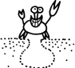
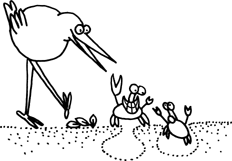
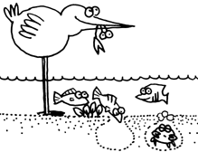
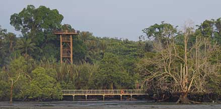
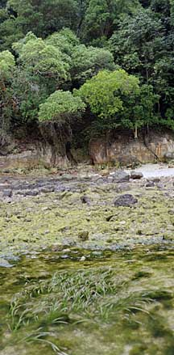
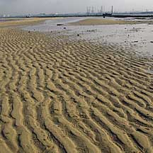
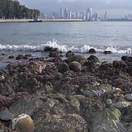

|
|
| index of concepts |
| tides | intertidal zone | zonation | ecosystems | rocky | sandy | seagrass | coral rubble | coral reef |
| Why
know ecosystems? updated Dec 2019
Plants and animals are not randomly distributed on our shores. To find them, it helps to understand where and how they live. |
||
 Habitat: Each living thing is generally found in a place that best suits it. Such a place is called a habitat and has characteristic conditions, for example, how often it is exposed out of water, the kind of bottom (rocky, muddy, sandy), water temperature and salinity, kind of currents and waves that affect it. |
||
 Community: Each living thing belongs to a community of other plants and animals. Members of a community interact with each other. Some, for example, may eat another. Others may compete with for living spaces. Yet others may have a symbiotic relationship with one another. |
||
 Ecosystem: Plants and animals also interact with their surroundings. An example is when they take in nutrients. Such a community and its surroundings, interacting in a stable structure, form an ecosystem.The ecosystems of our shores are connected to one another. The boundaries of each ecosystem, however, are not clearly marked. Overlaps occur as one ecosystem gradually changes into adjoining ecosystems. |
 Mangroves at Chek Jawa. |
 Seagrass meadows gradually merge into rocky shores and coastal forest at Sentosa |
|
 Sandy shore at Cyrene Reefs |
 Coral reefs at Kusu Island |
|
 Many different animals may be found under a rock! |


|
Links
|